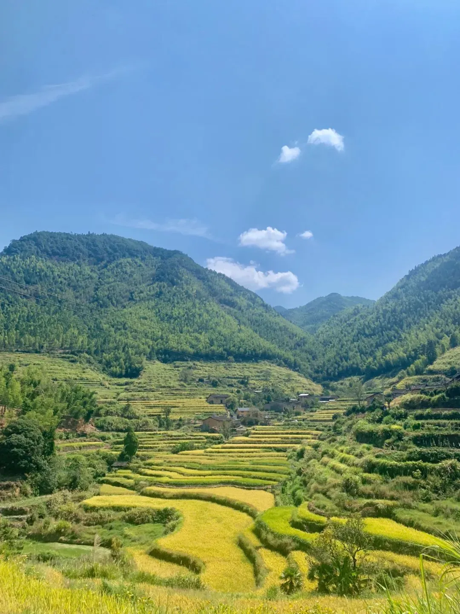
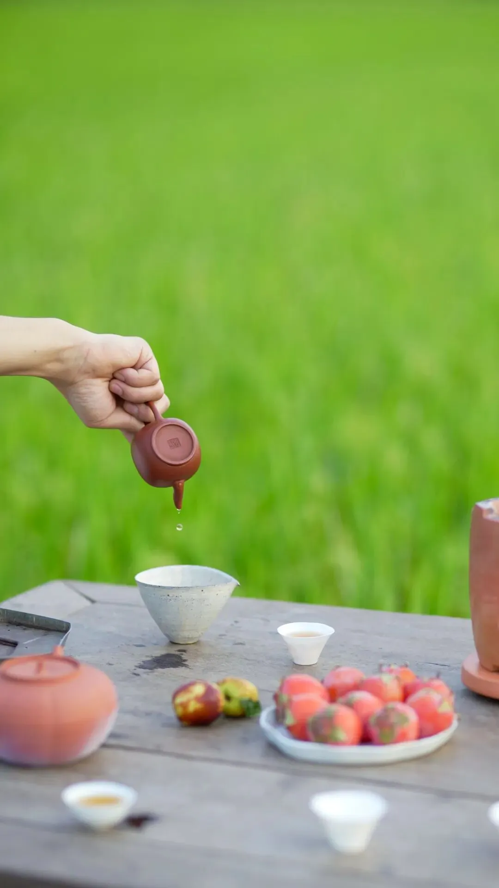
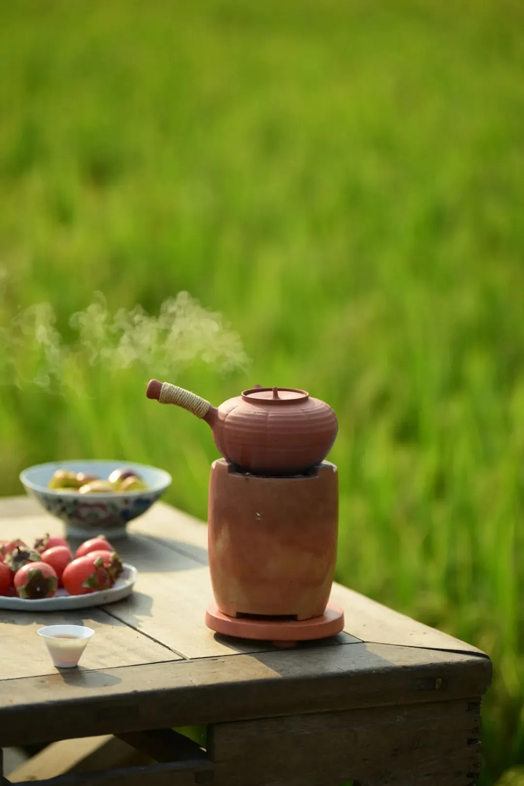

新的开始
最近在做比较大的调整，今天基本上搞定了资质、过审等耽搁了很多个月的事。
比如知识库，因为一些xx的原因，停了很久，上周五终于解决完核心问题，过审了。当然，为了过审，有所取舍，砍掉了一个核心专栏，把那个专栏的费用都退了。已可以正常更新。
比如财经号，耽搁了大概九个月时间，直到今天下午才搞定核心问题。近期会完成主体变更和迁移。
国庆节后大家会看到很不一样的东西，一个新的开始。
很多时候，只能耐住性子等，不如意的事有很多，许多事主动权并不在自己手里。这年景，难熬。
有些人说我躺平，其实没有，暂时休整。在我观念中，所谓躺平，是在能力范围内暂时按兵不动，寻找合适机会再出动。
暴雷房企那种所谓的“躺平”，其实那不叫躺平，那是逃避责任、无能。欠业主的房交了么？欠供应商的钱款还了么？欠员工的工资和理财款项结清了么？
没有的话，狗屁的躺平，别美化了好嘛，就是逃避责任、无能。请别侮辱“躺平”这个词。
有时觉得有些东西很魔幻，不知道何时能恢复正常。就像有人非要说“倒退”不是倒退，只是向后前进而已。
输的时候，能在能力范围内把事扛住，才有资格躺平。
... ...
大家常问我看什么书。
最近复读的两本书，一本是《反脆弱：从不确定性中获益》，一本是《生物思维》。
前者主要核心点是“能够在突如其来的变化冲击下获益的能力”；后者主要是“做大脑的控制者，更好地认识自我”，加强自我调节能力。感兴趣的可以去了解。
当然，别指望看几本书就改变自己的命运轨迹。尽信书不如无书，不要读死书。
社会和经历、阅历，才是一本真正的书籍，每个人手中的这本书内容都不一样，重要的是学会复盘，熟悉规则、利用规则，乃至制定规则。
简单一句话就是：要有“坐庄”的思维。
顶级的“庄家”，他们设置了你的一生，让你累、忙、穷，不会让你停下来思考的。停下来思考的人多了，庄家就危险了。
... ...
人间风月，不是虚妄，时间会磨去很多。山居已月余，消耗茶酒无数， 大红袍、金骏眉 和“ 天叙·天酱晴空 ”最受欢迎。
清晨的阳光，穿透晨雾，漫射在河边的秋草上， 稻浪 飘香，柿子红熟；
山间晚现的银杏、红枫、斑斓水杉，在秋风中起舞， 登高望远，千山尽染。
期待一场远行，就算风景如常，也会念念不忘路过我们的每缕阳光， 水落潮平，万物归根。
泡泡茶，聊聊天，喝喝酒，看看风景，思考问题，从纷繁复杂的信息流世界中脱身片刻，暂得些许安宁。
碎片 生活一角（武夷山访友）：



我 们看更大的 世界，是为了找到更适合自己的生存方式。 看世界不是目的，而是过程。
按日期浏览全部来源（同日按条目标识排序）